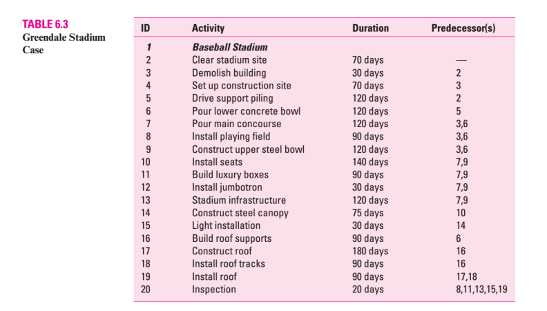

Group 8: Developing a Project Plan
- Greendale Stadium Case -
Source: E.W. Larson & C.F. Gray, 2011
The G&E Company is preparing a bid to build the new 47,000 seat Greendale baseball stadium. The
construction must start July 1, 2011, and be completed in time for the start of the 2014 season. A penalty
clause of $100,000 per day of delay beyond May 20, 2014, is written into the contract.
Ben Keith, the president of the company, expressed optimism at obtaining the contract and revealed that the
company could net as much as $2 million on the project. He also said if they are successful, the prospects for
future projects are quite good since there is a projected renaissance in building classic ball parks with modern
luxury boxes.
ASSIGNMENT
Given the information provided in Table 6.3, construct a network schedule for the stadium project and answer
the following questions:
1. Will the project be able to be completed by the May 20 deadline? How long will it take?
2. What is the critical path for the project?
3. Based on the schedule would you recommend that G&E pursue this contact? Why? Include a one-page
Gantt chart for the stadium schedule.

CASE APPENDIX: TECHNICAL DETAILS OF THE
GREENDALE BASEBALL STADIUM
The baseball stadium is an outdoor structure with a retractable roof. The project begins with clearing the site,
an activity that lasts 70 days. Once the site is clear, work can start simultaneously on the structure itself and
demolishing an adjacent building site. This demolition is necessary to create a construction stage for storing
materials and equipment. It will take 30 days to demolish the buildings and another 70 days to set up the
construction site.
The work on the stadium begins by driving 160 support pilings, which will take 120 days. Next comes the
pouring of the lower concrete bowl (120 days). Once this is done and the construction site has been set up,
then the pouring of the main concourse (120 days), the installation of the playing field (90 days), and the
construction of the upper steel bowl can occur (120 days).
Once the concourse and upper bowl are completed, work can start simultaneously on building the luxury
boxes (90 days), installing the seats (140 days), installing the jumbotron (30 days), and installing stadium
infrastructure (120 days) which includes: bathrooms, lockers, restaurants, etc. Once the seats are installed
then the steel canopy can be constructed (75 days) followed by the installation of the lights (30 days).
The retractable roof represents the most significant technical challenge to the project. Building the roof track
supports (90 days) can begin after the lower concrete bowl is constructed. At this time the dimensions of the
roof can be finalized and the construction of the roof at a separate site can begin (180 days). After the roof
supports are completed then the roof tracks can be installed (90 days). Once the tracks and the roof are
completed then the roof can be installed and made operational (90 days). Once all activities are completed it
will take 20 days to inspect the stadium.
For purposes of this case assume the following:
1. The following holidays are observed: January 1, Memorial Day (last Monday in May), July 4th, Labor Day
(first Monday in September), Thanksgiving Day (4th Thursday in November), December 25 and 26.
2. If a holiday falls on a Saturday then Friday will be given as an extra day off, and if it falls on a Sunday then
Monday will be given as a day off.
3. The construction crew work Monday through Friday
Group 8: Developing a Project Plan
- Greendale Stadium Case -
Source: E.W. Larson & C.F. Gray, 2011
Công ty G & E đang chuẩn bị đấu thầu để xây dựng sân vận động bóng chày Greendale 47.000 chỗ mới.
Việc xây dựng phải bắt đầu từ ngày 1 tháng 7 năm 2011 và được hoàn thành kịp thời để bắt đầu mùa giải 2014.
Một điều khoản là phạt 100.000$ đối mỗi ngày chậm trễ tính từ từ ngày 20 tháng 5 năm 2014, được viết vào hợp đồng.
Ben Keith, chủ tịch của công ty, bày tỏ sự lạc quan trong việc có được hợp đồng và tiết lộ rằng công ty có thể kiếm được tới 2 triệu đô la trong dự án.
Ông cũng nói nếu họ thành công, triển vọng cho các dự án trong tương lai khá tốt vì có một sự phục hưng dự kiến trong việc xây dựng các công viên bóng cổ điển với các hộp sang trọng hiện đại.
ASSIGNMENT
Cho các thông tin được cung cấp trong Bảng 6.3, xây dựng lịch trình mạng cho dự án sân vận động và trả lời các câu hỏi sau:
1. Dự án sẽ có thể được hoàn thành vào thời hạn 20 tháng 5 không? Mất bao lâu để làm nó ?
2. Tìm critical path của dự án
3. Dựa trên lịch trình, bạn có đề nghị G & E theo đuổi liên hệ này không? Tại sao? Bao gồm một biểu đồ Gantt một trang cho lịch trình sân vận động.
| ID |
Hoạt động |
Thời lượng |
Predecessor(s) |
| 1 |
Sân vận động bóng chày |
|
|
| 2 |
Dọn dẹp địa điểm SVĐ |
70 ngày |
__ |
| 3 |
Phá hủy tòa nhà |
30 ngày |
2 |
| 4 |
Thiết lập công trường xây dựng |
70 |
3 |
| 5 |
drive support piling |
120 ngày |
2 |
| 6 |
pour lower concrete bowl |
120 ngày |
5 |
| 7 |
Pour main concourse |
120 ngày |
3,6 |
| 8 |
Install playing field |
90 ngày |
3,6 |
| 9 |
Contruct upper steel bowl |
120 ngày |
3,6 |
| 10 |
Install seats |
140 ngày |
7,9 |
| 11 |
Build luxury boxes |
90 ngày |
7,9 |
| 12 |
Install jumbotron |
30 ngày |
7,9 |
| 13 |
Stadium infrastructure |
120 ngày |
7,9 |
| 14 |
Construct steel canopy |
75 ngày |
10 |
| 15 |
Light installation |
30 ngày |
14 |
| 16 |
Pour main concourse |
120 ngày |
6 |
| 17 |
Build roof supports |
90 ngày |
16 |
| 18 |
Install roof tracks |
90 ngày) |
16 |
| 19 |
Install roof |
90 ngày |
17,18 |
| 20 |
Inspection |
20 ngày |
8,11,13,15,19 |
Bảng 6.3
CASE APPENDIX: TECHNICAL DETAILS OF THE
GREENDALE BASEBALL STADIUM
Sân vận động bóng chày là một cấu trúc ngoài trời với mái có thể thu vào. Dự án bắt đầu bằng việc dọn sạch địa điểm, một hoạt động kéo dài 70 ngày.
Khi địa điểm đã được dọn sạch, công việc có thể bắt đầu đồng thời trên chính cấu trúc của nó và phá dỡ một địa điểm xây dựng liền kề.
Việc phá dỡ này là cần thiết để tạo ra một nơi để chứa vật liệu và thiết bị. Sẽ mất 30 ngày để phá dỡ các tòa nhà và 70 ngày nữa để thiết lập địa điểm xây dựng.
Việc làm tại sân vận động bắt đầu bằng việc lái các khoang chống đỡ 160, sẽ mất 120 ngày. Tiếp theo là nước đổ của chậu bê tông dưới (120 ngày). Một khi đã xong việc và đã thiết lập công trường xây dựng, thì việc đổ nước ở sảnh chính (120 ngày), việc lắp đặt sân chơi (90ngày) và việc xây dựng cái tô cao có thể diễn ra (120 ngày).
Sau khi hoàn thành phòng chờ và bát trên, công việc có thể bắt đầu đồng thời như xây dựng các hộp sang trọng (90 ngày), lắp đặt ghế ngồi (140 ngày), lắp đặt sân vận động (30 ngày) và lắp đặt cơ sở hạ tầng sân vận động (120 ngày), bao gồm: phòng tắm, tủ đựng đồ, nhà hàng, v.v ... Sau khi ghế được lắp đặt xong thì có thể thi công mái che bằng thép (75 ngày), sau đó là lắp đặt đèn (30 ngày)..
Mái nhà có thể thu vào là thách thức kỹ thuật quan trọng nhất đối với dự án. Việc xây dựng các giá đỡ đường mái (90 ngày) có thể bắt đầu sau khi lớp bê tông phía dưới được thi công. Tại thời điểm này, các kích thước của mái có thể được hoàn thiện và việc xây dựng mái tại một địa điểm riêng có thể bắt đầu (180 ngày). Sau khi hoàn thành các thanh đỡ mái thì các đường mái có thể được lắp đặt (90 ngày). Khi đường ray và mái nhà được hoàn thành thì mái nhà có thể được lắp đặt và đưa vào hoạt động (90 ngày). Sau khi tất cả các hoạt động hoàn thành, sẽ mất 20 ngày để kiểm tra sân vận động.
Đối với mục đích của trường hợp này, giả sử như sau:
1. Các ngày lễ sau đây được áp dụng: Ngày 1 tháng 1, Ngày tưởng niệ
2. Nếu ngày lễ rơi vào thứ bảy thì thứ sáu sẽ được nghỉ thêm một ngày, và nếu rơi vào chủ nhật thì thứ hai sẽ được nghỉ thêm một ngày.
3. Đội xây dựng làm việc từ thứ Hai đến thứ Sáu